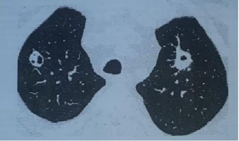

Menina, 7 anos de idade, apresentou quadro de faringoamigdalite bacteriana há cerca de 2 semanas, evoluindo há 01 dia com quadro de edema, hematúria macroscópica e redução do débito urinário. Após atendimento em pronto-socorro, foi observada hematúria com dismor smo eritrocitário positivo e hipertensão arterial. Em relação à condição apresentada pela paciente assinale a alternativa correta:
Uma criança de 7 anos de idade, previamente hígida, com história de tosse, coriza e odinofagia há 3 dias, evoluiu com edema periorbitário ontem, com piora hoje pela manhã. A mãe relata que o paciente apresentou quadro semelhante no mês anterior, com resolução espontânea, sem necessitar buscar auxílio médico. Ao exame, o paciente apresenta edema periorbitário, edema de membros inferiores e discreta ascite, sem outras alterações. Os exames realizados evidenciaram proteinúria e hipoalbuminemia. Com relação a esse caso clínico, assinale a alternativa correta.
Paciente de sete anos dá entrada no pronto atendimento infantil com quadro de edema insidioso de MMII e abdome que piora ao longo do dia, cefaleia e hematuria macroscópica. No exame físico, apresentava PA: 130/90mmHg e cacifo positivo maleolar. Na história pregressa há relato de amigdalites recorrentes. Sobre o caso clínico descrito, é INCORRETO afirmar que:
Um paciente do sexo masculino, com 6 anos de idade, apresenta queixa de edema de face há 15 dias, o qual progrediu para abdome e para membros inferiores há 7 dias. Ele relata diminuição do volume urinário e urina com aspecto de espuma. Nega quadro de febre, artralgia e cefaleia. Antecedentes pessoais: infecções de vias aéreas de repetição. Antecedentes familiares: avó materna com hipertensão arterial. Ao exame físico na entrada do pronto-socorro, apresenta bom estado geral, edema em face bipalpebral, acianótico, afebril, eupneico, ausculta cardíaca e respiratória sem alterações, abdome com ascite, sem visceromegalias, membros inferiores com edema bilateral de 2+/4+. Além disso, apresenta peso de 26 Kg (seu peso anterior ao edema era 19 de Kg), estatura de 110 cm, pressão arterial de 80 mmHg x 40mmHg. Foram realizados exames laboratoriais, que apresentaram hemograma normal, função renal normal, urina 1 com proteína 4+, albumina sérica de 2,0 g/dL. Com base no caso clínico apresentado, assinale a alternativa correta.
Maurício, 2 anos de idade, é levado ao pediatra por apresentar quadro de edema, com início há cerca de 2 semanas, que vem aumentando progressivamente. No início do quadro, o paciente estava apresentando sintomas gripais que melhoraram com uso de amoxacilina por 7 dias. Ao exame físico, o médico observou edema em face, abdome e em membros inferiores. A mãe da criança relata estar preocupada porque Maurício tem uma prima, hoje com 4 anos de idade, com diagnóstico de síndrome nefrótica há cerca de um ano. Para confirmar esse diagnóstico, os exames que devem ser solicitados são dosagens de
Situações variadas como infecção por HIV, doença de Still, hemofagocitose, uso de bifosfonatos e transplante renal estão associadas à seguinte nefropatia:
Uma paciente de 33 anos, nulípara, recebeu o diagnóstico de nefrite lúpica classe IV. Sua função renal é normal, mas a proteinúria de 24 horas é de 3,5g. Qual seria a melhor opção para o tratamento de indução neste caso?
Na investigação de um paciente com hematúria microscópica e suspeita de lesão glomerular, qual tipo de cilindros espera- se encontrar no exame de urina?
Homem, 55 anos, teve infecção de vias aéreas superiores há 3 semanas, com melhora após uso de anti-inflamatório não esteroidal por 10 dias. Refere adinamia, redução do volume de diurese e edema de membros inferiores, progressivo, há 1 semana. Exame físico: PA= 140 x 90 mmHg, FC = 100 bpm. Ausculta: bulhas cardíacas rítmicas e hiperfonéticas, sem sopro: murmúrio vesicular presente, com crepitações em bases pulmonares. Exames laboratoriais Cr 3,0 mg/dL, Ur: 100mg/dL, Na: 140 mEq/L, K: 4,0 mEq/L, Ca: 7,5 mg/dL, albumina: 1,8 mg/ dL e dosagens de complemento C3 e C4 normais; urina rotina densidade: 1020, hemácias: 2/campo, leucócitos: 2/campo, proteínas: 500 mg/dL, lipídeos: 3+. Qual a hipótese mais provável?
Menino com 8 anos e história de feridas na perna há 15 dias. Há 5 dias evoluiu com edema palpebral e urina escurecida. Exame físico: edema palpebral e de membros inferiores, frequência respiratória 20 ipm, murmúrio vesicular presente, simétrico, com alguns estertores nas bases, estase jugular discreta; frequência cardíaca 80 bpm, PA 120 x 80 mmHd, fígado palpável a 2,5 cm do rebordo costal direito. Exames laboratoriais: urina tipo 1: proteína ++/4+, leucócitos 60 a 80 por campo; hemácias incontáveis; ureia 71 mg/dL; creatinina 0,7 mg/dL. Qual o tratamento medicamentoso inicial mais indicado para o caso?
Uma criança de nove anos com síndrome nefrótica pura deve ser abordada da seguinte forma num primeiro momento:
Paciente em acompanhamento de síndrome nefrótica subitamente apresenta dor abdominal e febre. Ao exame abdome globoso, difusamente doloroso. Pensando no quadro atual, qual tratamento deve ser iniciado?
Idosa, 65 anos, tabagista desde os 15 anos, em estadiamento de adenocarcinoma de pulmão, o qual fora descoberto em investigação de síndrome consumptiva. Procurou atendimento por edema progressivo de membros inferiores e superiores há 2 semanas. Ao exame, PA 160x90 mmHg, FC 92 bpm, ausculta cardiopulmonar com roncos e sibilos ocasionais, edema simétrico de membros inferiores e superiores. Traz os seguintes exames: hemoglobina 14,8 g/dL, leucócitos 7850/mm³ , neutró los 5240/mm³ , plaquetas 213000/mm³ , ureia 62mg/dL, creatinina 2,2mg/dL, sódio 128 mmol/l, potássio 4,3 mmol/l, magnésio 2,1mg/dl cálcio 9,4 mg/dl, albumina 2,3g/dl. Ecocardiograma normal. Sumário de urina com proteína 2+, nitrito negativo, esterases leucocitárias ausentes, 3 leucócitos por campo, 2 hemácias por campo, raras bactérias. Assinale a alternativa com diagnóstico mais provável.
F.J. R., de sete anos de idade, vem ao pronto-socorro de pediatria com queixa de edema, oligúria, urina de cor escura, amaurose e hipertensão arterial. No caso desse paciente, qual a principal hipótese diagnóstica e conduta mais adequada para o caso?
Um paciente compareceu ao ambulatório com um exame de material obtido por biópsia renal percutânea, que indicava glomerulosclerose segmentar e focal. Trata-se de uma doença renal do tipo secundária. Com base nesse caso hipotético, é correto afirmar que o diagnóstico causal mais provável é o de
Criança de 2 anos e 3 meses de idade é internada em enfermaria com quadro clínico de edema generalizado, frio e depressível. A história revela um quadro insidioso e, recentemente, os pais notaram os “olhos inchados”, aumentando progressivamente. Ao exame físico: criança tem bom contato, com aspecto neurológico normal, afebril, acianótica e anictérica. Exames laboratoriais: albuminemia de 2,0 g/dL, proteinúria de 55 mg/kg/dia e hematúria microscópica. Entre as seguintes hipóteses patológicas, a mais provável para este caso é glomerulonefrite
Foram realizadas biópsias renais em diversos pacientes que apresentaram síndrome nefrótica associada ao uso de anti- inflamatórios não hormonais. Os tipos anatomopatológicos mais encontrados são provavelmente:
Paciente, 30 anos, sexo feminino, queixa-se de edema e urina escurecida. Observa-se edema peripalpebral, hipertensão arterial sistêmica, ausculta cardiopulmonar sem nada digno de nota. Urina EAS com 40 hemácias/campo e 1+ de proteína, proteinúria de 24 horas com 1 grama, creatinina 2 mg/dl, C3 50 mg/dl (90-180 mg/dl), albumina sérica 3,5 g/dl, colesterol sérico 150 mg/dl. A síndrome a que se refere o caso e a doença que ocasiona consumo de complemento são, respectivamente,
A criança com síndrome nefrótica precisa do seu calendário vacinal completo. Algumas vacinas têm forte recomendação para essas crianças. Entre elas, está:
Homem, 28 anos de idade, previamente hígido, há 3 dias apresenta urina escura e edema de membros inferiores, iniciados 1 dia após quadro de odinofagia. Ao exame físico: afebril, PA = 150/100 mmHg, FC = 89 bpm, FR = 17 irpm, SpO₂ = 98%. Exames laboratoriais: creatinina sérica =1,4 mg/dL; exame de urina I com 1,2 g/L de proteína, hemácias = 296.000/campo (normal até 10/campo), dismor smo eritrocitário presente e leucócitos = 08/campo (normal até 10/campo). RT-PCR para SARS-CoV-2 negativo; níveis de complemento sérico C3 = 120 mg/dL (VR: 90-180 mg/dL), C4 = 37 (VR: 15-53 mg/dL) e CH50 = 125 U/CAE (VR: 60-165 U/CAE). Qual é o diagnóstico mais provável?
A complicação da biópsia renal percutânea mais observada na prática clínica é o(a)
Um menino de cinco anos de idade foi levado ao ambulatório com queixa de inchaço progressivo em face e no corpo inteiro há cerca de dez dias. Sua mãe refere urina espumosa, com diminuição do volume, e diarreia líquida há dois dias. Nega outros antecedentes mórbidos. Ao exame físico, apresenta-se em anasarca e com intenso edema de bolsa escrotal. Os exames laboratoriais revelam hipoalbuminemia de 1,6 g/dL, creatinina de 1 mg/dL e ureia de 70 mg/dL. Com base nesse caso hipotético, assinale a alternativa correta.
Escolar, sexo feminino, 6 anos de idade, portadora de síndrome nefrótica córtico-dependente, está internada em enfermaria de pediatria há 4 dias. A paciente apresentou sintomas compatíveis com resfriado comum iniciados há 1 semana e, no dia da internação, mãe relatava redução importante da diurese e lipotimia. O peso aferido na chegada foi de 31 kg (ganho de 6 kg em relação à última consulta). Hoje, a paciente está no quarto dia de internação, recebendo dieta hipossódica, infusão endovenosa de albumina humana uma vez ao dia (última dose ontem pela manhã) e prednisona oral. Está sem novas queixas, em bom estado geral, afebril e normotensa. Seguem abaixo: a tabela com a evolução dos exames laboratoriais na internação e o balanço hídrico registrado pela enfermagem nas últimas 24 horas. Qual é a afirmação correta com relação à programação a ser estabelecida?
Mulher, 62 anos, história de diabete mélito há, aproximadamente, 20 anos, vem à consulta por aumento de peso, inchaço em face e em membros inferiores iniciados há duas semanas e com piora recente. Havia consutado com endocrinologista, trazendo os seguintes exames: creatinina sérica 1,5 mg/dL, exame qualitativo de urina com 3 + de proteínas e sem outros achados dignos de nota. Colesterol total de 240 mg/dL, triglicerídeos 330 mg/dL, albumina sérica 3,2 g/dL e hemoglobina glicosilada de 9%. Fundo de olho com retinopatia diabética não proliferativa. A hipótese diagnóstica mais provável é de uma glomerulopatia _______________ cujos achados histológicos mais compatíveis são de _______________. As informações que completam corretamente as lacunas, na ordem em que se encontram, estão contidas na alternativa:
Uma paciente de 18 anos com diagnóstico de lúpus eritematoso sistêmico há dois anos, baseado em queixas cutâneo- articulares e pleurite, procurou o hospital com queixas de edema de face, hematúria e hipertensão. Os exames complementares mostraram níveis baixos de C3, hematúria, proteinúria e cilindros hemáticos e retenção de escórias nitrogenadas (creatinina 3,1 mg/dL). Sabendo que, um mês antes, ela tinha creatinina de 0,8 mg/dL, aponte a primeira terapêutica a ser utilizada neste momento.
Paciente com 14 anos de idade, fisicamente ativo, apresenta edema periorbitário e hipertensão discreta, tendo desenvolvido urina com coloração de "chá-preto", revelando ao exame presença de cilindros hemáticos ao microscópio. No exame de sangue, veri cou-se dosagem de C3 baixa e C4 normal. O nível de antiestreptolisina-O estava normal, e de antidesoxirribonuclease-B estava aumentado. O provável diagnóstico é:
Sobre síndrome nefrótica e síndrome nefrítica, assinale a alternativa INCORRETA.
Sobre a Síndrome Nefrótica é correto afirmar que:
Uma menina de oito anos de idade, com história de doença renal há dois anos, usava medicações, mas parou por conta própria há dois meses. Sua mãe refere inchaço progressivo nos olhos e nos membros inferiores há quatro dias e cefaleia, vômitos e irritabilidade há um dia. Encontra-se em mau estado geral, descorada +/4+, afebril, taquicárdica, com pressão arterial elevada, edema palpebral ++/4+, ascite e edema nos membros inferiores +/4+. Com base nessa situação hipotética, assinale a alternativa que apresenta os diagnósticos mais prováveis.
Mulher de 23 anos procura UBS com queixa de edema generalizado. Informa que o edema se iniciou há alguns meses, sendo que no início era localizado nos MMII distalmente e aparecia à tarde. Posteriormente, observou também edema palpebral após acordar. O quadro foi se agravando progressivamente até o edema aparecer de forma generalizada, nas últimas 2-3 semanas. Quando questionada, refere que o volume urinário está normal, mas a urina está espumosa. Sem outras queixas. O exame físico não apresenta alterações além do edema generalizado 2+/4+; PA 110/65mmHg, FC 82bpm, FR 18ipm, Tax 36,SºC. Trouxe consigo exames recentes que evidenciavam: hemograma e função renal dentro da normalidade, albumina plasmática 2, 1 g/dl, relação proteína/creatinina na urina 3,89/9 (VR <0,2g/g). Dentre os achados relacionados abaixo, qual é aquele que NÃO é habitualmente observado na síndrome apresentada pela paciente?
Homem, 52 anos de idade, apresentava há 4 meses edema de membrosinferiores, que evoluiu para anasarca após 1 mês. Foi internado com diagnóstico de síndrome nefrótica. Realizou biópsia renal, apresentando à microscopia óptica 20 glomérulos com espessamento difuso da membrana basal glomerular e, à imuno uorescência, presença de IgG e C3 em depósitos subepiteliais, com padrão granular. Qual é o diagnóstico histológico?
Homem, 25 anos de idade, apresenta edema de membrosinferiores, diminuição do volumeurinário e urina espumosa há 5 meses. A investigação: ultrassonogra a com rins de tamanhos normais, com perda da diferenciação córtico-medular; creatinina sérica = 2,0 mg/dL; proteinúria = 9,0 9/24 horas; 20 eritrócitos por campo no exame de urina; dislipidemia, hipoalbuminemia, glicemia normal; sorologias positiva para HIV e negativas para hepatites B e C. Mostrou-se pouco aderente ao tratamento do HIV e em 10 meses evoluiu para o estágio 5 da doença renal crônica. Qual é o diagnóstico histológico mais provável neste caso?
Qual é o sinal clínico mais frequente da síndrome nefrótica?
A glomerulonefrite difusa aguda pós-estreptocócica (GNDA) é caracterizada fundamentalmente por processo inflamatório de origem imunológica que acomete os rins. Na GNDA é correto afirmar:
Menino de 9 anos de idade, com história de edema palpebral há 3 dias e urina avermelhada há 1 dia. Mãe refere que há 2 semanas seu lho utilizou amoxicilina, para dor de garganta, por 5 dias. Exame físico: peso 27 kg, estatura 129 cm, edema palpebral e de membros inferiores + +/4+, frequência cardíaca 70 bpm, pressão arterial 120 x 80 mmHg. Exames laboratoriais: ureia 60 mg/dl, creatinina 1,0 mg/dl. Hemograma: hemoglobina 1 0g/dl, hematócrito 30%, leucócitos 12.000/ leucócitos. Qual é o diagnóstico mais provável?
Mulher, 25 anos, previamente sem comorbidades e com exames recentes normais, refere diminuição de volume urinário, alteração do aspecto da urina e edema em membros. Exame físico: PA = 156 x 90 mmHg; edema de membros inferiores 2+/4+, sem outras alterações. Exames: creatinina: 2,3mg/dl, ureia: 68 mg/dl, albumina: 3, 1 g/dl, urina 1: proteína 150 mg/dl, hemácias 300 por campo. Entre as opções abaixo, qual exame seria mais importante na elucidação diagnóstica?
Caso clínico 1A4-III Uma paciente de 22 anos de idade, previamente hígida, compareceu ao pronto atendimento com queixas de fadiga importante, anorexia e urina escura havia três dias. Ela relatou quadro de infecção das vias aéreas superiores havia duas semanas. Negou tabagismo, etilismo e antecedentes familiares de patologias significativas. Ao exame físico, apresentou: pressão arterial de 178 mmHg × 106 mmHg, frequência cardíaca de 94 bpm e edema de membros inferiores, sem outros achados relevantes. O exame de urina tipo 1 (EAS) revelou pH = 7,1; proteínas++; 120.000 hemácias com dismor smo; cilindros granulosos e hemáticos ++. A proteinúria de 24 horas foi de 1 g/dia e a creatinina sérica de 1,7mg/dL. Os demais exames laboratoriais de rotina não apresentaram alterações significativas. Assinale a opção que apresenta o achado laboratorial mais esperado no caso clínico 1A4-III.
Um paciente de 4 anos de idade, apresenta queixa de edema em membros inferiores e urina espumosa. Ao exame físico, mostra-se em BEG, corado, hidratado; cardio: bulhas rítmicas normofonéticas sem sopros audíveis; pulmonar: murmúrio ventricular presente, simétrico, sem ruídos adventícios, sem sinais de desconforto. Constatam-se abdome plano, ruídos hidroaéreos presentes, ácido, sem visceromegalias, indolor; otoscopia: membrana timpânica hialina, sem abaulamento, sem hiperemia de conduto, sem outras alterações – bilateralmente; oroscopia: sem placas, sem hiperemia, sem lesões ou outras alterações; e pulsos cheios, tec < 3 seg. Ao exame neurológico, observam-se Glasgow 15, paciente ativo, reativo ao exame, com pupilas isocóricas e fotorreagentes, sem sinais focais, sem sinais meníngeos, pele íntegra, anictérico, e membros inferiores com edema 2+/4+, mole, frio e depressível. Veri cam-se também FC = 106 bpm, FR = 26 irpm, PA no percentil 50, T = 36,5 ºC e SatO2 = 100% em AA. Com base nesse caso clínico, quanto à síndrome nefrótica na faixa etária pediátrica, assinale a alternativa correta.
A enfermaria de Pediatria, de um hospital de referência, recebe uma menina de 5 anos de idade com história de edema periorbitário há, aproximadamente, 3 dias, e que, agora, atinge abdomen e membros inferiores. A genitora relata 3 a 4 dejeções ao dia, com fezes amolecidas, e que a urina está espumosa. Sem antecedentes patológicos, refere ser alérgica a picada de insetos. Ao exame, T.: 36.4oC.; FC: 92bpm; FR: 24ipm; PA: 95x65mmHg. O estado geral é regular. Pele sem alterações à inspeção; mucosas coradas; edema bipalpebral bilateral. Abdomen globoso, referindo desconforto que impede a palpação profunda; edema em membros inferiores. Demais dados do exame segmentar sem alterações. Aguarda-se os resultados dos exames laboratoriais. Diante do relato e dos dados apresentados, Indique, dentro dos dados clínicos apresentados, aquele que, se presente, indica biópsia do órgão sede da lesão, em casos semelhantes ao descrito.
A enfermaria de Pediatria, de um hospital de referência, recebe uma menina de 5 anos de idade com história de edema periorbitário há, aproximadamente, 3 dias, e que, agora, atinge abdomen e membros inferiores. A genitora relata 3 a 4 dejeções ao dia, com fezes amolecidas, e que a urina está espumosa. Sem antecedentes patológicos, refere ser alérgica a picada de insetos. Ao exame, T.: 36.4oC.; FC: 92bpm; FR: 24ipm; PA: 95x65mmHg. O estado geral é regular. Pele sem alterações à inspeção; mucosas coradas; edema bipalpebral bilateral. Abdomen globoso, referindo desconforto que impede a palpação profunda; edema em membros inferiores. Demais dados do exame segmentar sem alterações. Aguarda-se os resultados dos exames laboratoriais. Diante do relato e dos dados apresentados, Considerando os níveis máximos de albumina sérica, para reforçar a suspeita diagnóstica mais provável, é esperado que estejam abaixo de:
A enfermaria de Pediatria, de um hospital de referência, recebe uma menina de 5 anos de idade com história de edema periorbitário há, aproximadamente, 3 dias, e que, agora, atinge abdomen e membros inferiores. A genitora relata 3 a 4 dejeções ao dia, com fezes amolecidas, e que a urina está espumosa. Sem antecedentes patológicos, refere ser alérgica a picada de insetos. Ao exame, T.: 36.4oC.; FC: 92bpm; FR: 24ipm; PA: 95x65mmHg. O estado geral é regular. Pele sem alterações à inspeção; mucosas coradas; edema bipalpebral bilateral. Abdomen globoso, referindo desconforto que impede a palpação profunda; edema em membros inferiores. Demais dados do exame segmentar sem alterações. Aguarda-se os resultados dos exames laboratoriais. Diante do relato e dos dados apresentados, Indique o valor esperado para a proteinúria de 24 horas, para ns de confirmação do diagnóstico principal provável, nesse caso.
Pré-escolar de 5 anos, sexo masculino, é levado para atendimento médico-hospitalar com história de edema em face há 1 semana, evoluindo nas últimas 48h com edema em membros inferiores. Genitora nega qualquer outra queixa. Ao exame, apresenta-se corado, hidratado, afebril, eupneico, orientado, com edema bipalpebral bilateral e em membros inferiores (2+/4+). Auscultas cardíaca e respiratória normais, FC: 108 bpm, FR: 24 ipm, PA: 90x70 mmHg (Percentil 95 de PA: 110x82 mmHg). Exame abdominal: sem alterações. Diante da hipótese diagnóstica mais provável, podemos afirmar que
Menino de 3 anos apresenta edema em face há 2 semanas, que progrediu para pernas e barriga há 7 dias, e diminuição da diurese há 2 dias. Exame físico: FC 110 bpm, FR 20 irpm, PA 87 x 50 mmHg. BEG, hidratado, corado, edemaciado: palpebral +2/+4, membros inferiores +3/+4, escrotal e na região sacral, presença de ascite. As alterações laboratoriais urinárias e sanguíneas, respectivamente, que sugerem o diagnóstico da doença são:
A síndrome nefrótica é caracterizada pelo conjunto de sinais, sintomas e alterações laboratoriais, e pode ser consequência de uma série de doenças. Nesse caso, o paciente cursa com edema generalizado, urina espumosa,
Em relação aos casos de hematúria a esclarecer, assinale a alternativa correta.
Um menino de 2 anos e 7 meses de idade foi internado por apresentar edema generalizado. A anamnese e o exame físico revelam urina espumosa e edema insidioso, frio, depressível e periorbitário, aumentando progressivamente durante o dia. O exame laboratorial MENOS esperado para esta criança, dentre os abaixo, é
Menino de 5 anos com diagnóstico de síndrome nefrótica é levado para atendimento com quadro de dor abdominal intensa, de início há duas horas. Vinha em redução da dose de corticoterapia. Ao exame físico, está em regular estado geral, com fáscies de dor, abdômen tenso, com dor à palpação super cial e descompressão dolorosa. Ausculta cardíaca e respiratória sem alterações. Há edema bipalpebral e de membros inferiores. O EAS mostra ausência de piúria ou hematúria. O spot O agente etiológico mais provável para o quadro é:
A síndrome nefrótica idiopática é a mais frequente das manifestações clínicas apresentada em portadores de glomerulopatias primárias, na faixa etária pediátrica. Sua confirmação diagnóstica baseia-se nas alterações clínico laboratoriais e o achado histopatológico mais comum é a síndrome nefrótica por lesões mínimas (SNLM). Em qual situação, a síndrome nefrótica poderá ser de origem secundária?
Criança de 4 anos é trazida pela mãe com queixa de edema palpebral, face e membros inferiores de início há 10 dias. Ao exame,os pulsos são palpáveis e os níveis tensionais encontram-se normais para a faixa etária. Laboratorialmente, observa- se hemograma e marcadores de função renal dentro da normalidade, albumina de 1,0 g/dL e níveis elevados de colesterol. Spot urinário mostrou proteinúria maior que 50 mg/kg em 24 horas. Considerando a principal hipótese diagnóstica e etiologia para o quadro apresentado, a melhor conduta seria:
Escolar de 6 anos apresenta-se com aumento súbito de peso. Ao exame edema de membros inferiores com cacifo ++/4, edema de bolsa escrotal e ascite. Exame de urina com proteinuria +++, pressão arterial normal. Iniciado tratamento com prednisona 60mg/m2/ dia, sem resposta após 8 semanas. Realizada biopsia renal que foi sem alterações à microscopia óptica. Considerando esta situação, analise as asserções abaixo e a relação proposta entre elas. I – É improvável o diagnóstico de síndrome nefrótica por lesão mínima. PORQUE II – A biopsia sem alterações e a falta de resposta ao corticoide descartam esta hipótese. A respeito destas asserções, assinale a opção correta.
Uma adolescente de 16 anos descobriu ter proteinúria ortostática (1,2 g/dia). Nesse caso, qual é o risco de desenvolver doença renal no futuro?
Criança, 5 anos, sexo feminino, é levada ao posto de saúde com queixa de “urina avermelhada” há 2 dias. Nega quadros semelhantes previamente. Nega uso de medicações. Relata história de infecção de vias aéreas superiores há 2 semanas. Ao exame: EGB, eupneica, corada, hidratada. Ausculta cardíaca e pulmonar sem alterações. Abdome: fígado palpável ao nível do rebordo costal direito. PA 125x83mmHg. Edema discreto periorbitário e de membros inferiores. Traz os seguintes exames: Sumário de urina: densidade de 1025, hemoglobina (++), proteína (+), hemácias numerosas, leucócitos: 4/campo; Ureia sérica: 20mg/dL; creatinina sérica: 0,5mg/dL. Qual é a principal hipótese diagnóstica?
Paciente de 20 anos consultou por "inchaço nos olhos e nas pernas" e urina com espuma, mas sem alteração de cor ou odor, quadro que vinha ocorrendo há 2-3 meses. Negou outras doenças prévias e uso de medicações ou drogas ilícitas. Ao exame físico, apresentava pressão arterial de 125/75 mmHg, frequência cardíaca de 70 bpm, é, edema 3+/4+ nas pernas e edema periorbital. Exames laboratoriais indicaram eletrólitos e creatinina normais; ultrassonogra a, rins de tamanho normal; e EQU, proteína 4+, sem hematúria. Biópsia renal não demonstrou alterações à microscopia óptica, mas, à microscopia eletrônica, foi observado apagamento difuso de podócitos. Qual o provável diagnóstico?
Escolar, sete anos, é levado ao consultório pelos pais com início agudo de urina de cor amarronzada, mal-estar inespecí co e edema periorbitário. O paciente é previamente hígido, sem dados relevantes na história familiar. A pressão arterial é de 135x80mmHg, não apresentando outras alterações no exame físico. Os pais apresentam exames laboratoriais com os seguintes resultados: sódio = 140mEq/L; potássio = 4,0mEq/L; creatinina = 0,4mg/dL. EAS com densidade urinária = 1.010; pH = 6,0; hemácias = 3+, proteínas = 1+, com > 100 hemácias por campo e presença de cilindros hemáticos. Dentre as alternativas a seguir, a próxima etapa mais apropriada no diagnóstico desse paciente é:
Revisar: possível letra faltando em enunciado
Um paciente com proteinúria elevada (superior ou igual a 3,5 g/1,73 m² de superfície corpórea/dia no adulto), hipoalbuminemia e edema possui o diagnóstico mais provável de
Em 40 a 50% dos casos, há hematúria macroscópica acompanhando infecção de vias aéreas superiores (hematúria sin- faringítica). Em 30 a 40%, a hematúria é microscópica com proteinúria leve. Em menos de 10% ocorre síndrome nefrótica ou glomerulonefrite rapidamente progressiva. O texto refere-se a
O risco de trombose varia entre as causas de síndrome nefrótica, sendo o mais elevado nos pacientes com
Considere os pacientes 1, 2 e 3 que apresentam proteinúria variando de 4,5 a 6,2 gramas/dia: Paciente 1: Portador de linfoma de Hodgkin com uso frequente de antiinflamatórios não esteroidais. Paciente 2: Índice de massa corpórea de 41 kg/m² e com nefropatia de refluxo. Paciente 3: Portador do vírus B da hepatite e com carcinomatose. Glomeruloesclerose segmentar e focal, glomerulonefrite membranosa e nefropatia de lesões mínimas associam-se, respectivamente, aos pacientes
Vasculite por IgA ou púrpura de HenochSchönlein PHS Homem de 20 anos apresenta quadro de poliartrite, dor abdominal aguda, púrpuras palpáveis nas pernas e hematúria micros- cópica. Hemograma, coagulograma, creatinina e complemento sérico são normais. O diagnóstico mais provável é
Homem, 60a, procura Unidade Básica de Saúde com edema progressivo, urina espumosa e redução do volume urinário há dois meses. Exame físico: PA= 124x78 mmHg; edema palpebral bilateral, edema sacral +/4+, ascite, edema de membros inferiores ++/4+ até raiz de coxas. Pulmões: murmúrio vesicular diminuído em bases pulmonares. Albuminemia= 2,4g/dL; glicemia= 78mg/dL, creatinina= 1,4mg/dL, proteinúria de 24 horas= 10 gramas/24horas; Exame sumário de urina: hemácias= 2/campo, leucócitos= 1/campo, proteína +++/4+. OS DIAGNÓSTICOS SINDRÔMICO E NOSOLÓGICO SÃO:
Em relação à Síndrome Nefrótica Idiopática da infância, é correto afirmar que:
Paciente do sexo masculino, 18 anos, recebeu diagnóstico de Diabetes Mellitus do tipo 1, após quadro de cetoacidose diabética, diagnosticada há 2 anos. Apresenta um quadro de anasarca de início insidioso há 3 meses. Refere início de edema em membros inferiores e face, com ganho de peso de aproximadamente 7 kg no período. Vem em tratamento regular com insulinoterapia e nega uso prévio de inibidores da enzima conversora da angiotensina, anti-inflamatórios ou hipolipemiantes. Os exames apresentados revelaram: Hb = 12,3g/dL leucócitos 6320 plaquetas 290.000. Creatinina = 0,6; Ureia = 67; Na = 131 ; K = 4,5; Albumina = 2,1; Colesterol total = 290 ; LDL = 178; TGL = 190. Glicemia de jejum = 115 ; Hemoglobina glicada = 7,0%. EAS: proteínas 4+, presença de corpúsculos ovais graxos, ausência de hematúria. A respeito do quadro apresentado, justifica-se
Homem, 40 anos, internado com insu ciência renal aguda. EAS: hematúria, cilindros hemáticos e proteinúria nefrótica. Tomogra a (TC) de seios da face: sinusite em seios maxilares e a TC de tórax é mostrada abaixo. O anticorpo provavelmente presente no caso deste paciente é:

Lactente de 2 anos com edema iniciado em face há uma semana e agora por todo o corpo. Ganho de peso de 3kg no período. Exames mostram urina com proteinúria ++++, colesterol de 320mg/dl, albumina sérica de 1,5g/dl, ureia e creatinina normais. Apresenta na evolução dor abdominal importante, febre e sinais de peritonite. Qual o agente mais provável do quadro abdominal?
Um paciente de 62 anos, previamente hígido, foi trazido para a emergência, com rebaixamento do nível de consciência. Familiares relatavam que ele vinha há uma semana com edema generalizado. Ao exame físico, ele apresentava níveis pressóricos muito elevados (PA 220 x 160 mmHg), edema de face e membros, sem sinais focais no exame neurológico. O único antecedente relevante era um episódio de erisipela cerca de 30 dias antes do início do quadro atual. Qual dos achados abaixo provavelmente NÃO seria encontrado nesse caso?
Paciente de quatro anos, do sexo feminino, apresenta-se com síndrome nefrótica. É feita biópsia renal, sem achados anormais à microscopia óptica ou ao exame por imuno uorescência. Nesse caso, qual achado à microscopia eletrônica provavelmente será encontrado nesta biópsia?
Paciente de quatro anos, do sexo masculino, apresenta-se ao médico com edema facial. Foram encontrados 3,8 g de proteína na coleta de urina de 24 horas. Não havia sangue, glicose ou cetonas na urina, e o exame microscópico não mostrou cilindros nem cristais. A creatina sérica era normal. Ele foi submetido a um curso de terapia com corticosteroide e melhorou. Entretanto, teve mais dois episódios de proteinúria nos anos seguintes, e todos responderam ao tratamento com corticosteroides. O exame de uma biópsia renal ao microscópio óptico provavelmente revelará:
A biópsia renal percutânea pode trazer informações diagnósticas e prognósticas sobre diferentes patologias renais. Considerando as indicações e contraindicações desse método,
Um paciente de 5 anos de idade é levado ao pronto atendimento com queixas de odinofagia e febre não aferida de início há três dias. Ao exame físico, constatou-se FC = 101 bpm, FR = 18 irpm, saturação de oxigênio = 100%, ausculta pulmonar normal, otoscopia normal bilateralmente, oroscopia com presença de exsudato amigdaliano branco-amarelo. O pediatra de plantão realiza o diagnóstico de amigdalite bacteriana. Quanto ao caso clínico apresentado e tendo em vista os conhecimentos médicos correlatos, julgue o item a seguir. O início imediato do tratamento é capaz de prevenir a glomerulonefrite pós-estreptocócica.
Criança, 4 anos, sexo feminino, apresenta edema em face e tosse há dois dias, sem febre. Exame físico: bom estado geral, edema palpebral bilateral. PA: 135x95mmHg. Ausculta cardíaca: Bulhas rítmicas, normofonéticas FC: 98bpm. Ausculta respiratória: crepitações em bases bilateralmente. Abdome: edema de parede abdominal, fígado a 3 cm do rebordo costal direito; edema (+2/4+) em membros inferiores. Exames laboratoriais: Sumário de urina: pH: 5,5, densidade 1025, proteina: ++, hematúria: ++, leucócitos: 20/campo. Ureia: 20mg/dL, creatinina: 0,5mg/dL. A hipótese diagnóstica mais provável e o marcador laboratorial a ser solicitado são, respectivamente:
Menino, 5 anos de idade, apresentou quadro de faringoamigdalite bacteriana há cerca de 2 semanas, evoluindo há 1 dia com quadro de edema, hematúria macroscópica e redução de débito urinário. Após atendimento em pronto-socorro foi observada hematúria com dismor smo eritrocitário positivo e hipertensão arterial (PA = 140x70 mmHg). Em relação à condição apresentada pelo paciente assinale a alternativa correta:
Homem, 45 anos, hipertenso e diabético há 10 anos. Há 4 meses apresentava-se assintomático, com PA: 128 x 82 mmHg e os seguintes exames laboratoriais: creatinina: 1,0 mg/dl, ureia: 33 mg/dl, hemoglobina glicada: 6,9% urina I sem alterações e proteinúria: 120 mg/24hs (VR < 150 mg/24hs). Há 3 meses fez uso de cetoprofeno, durante 1 semana, por dor em ombro. Há 1 mês refere urina espumosa e aumento da pressão arterial. Exames laboratoriais atuais: creatinina: 3,8 mg/dl. ureia: 118 mg/dl, hemoglobina glicada: 7,2%, urina I: proteína 2+, hemácias: 250 por campo (15% de acantócitos) e proteinúria: 1700 mg/24hs. Qual é o diagnóstico mais provável?
Um menino de 7 anos chega à emergência com edema generalizado. Iniciou há 5 dias quadro de edema difuso, oligúria e colúria. No exame físico foi detectada hipertensão arterial para sua faixa etária. Qual a complicação mais comum para essa condição clínica, nos casos não tratados?
Uma paciente de 23 anos de idade procurou o pronto-socorro por quadro de edema há três semanas. Referiu que, inicialmente, o edema se localizava em membros inferiores, porém, após duas semanas, já estava generalizado, até em face. Referiu, também, ter ganhado peso e ter usado anti-inflamatórios uma semana antes do quadro para dor de cabeça, mas negou quaisquer outras queixas. Na investigação, foram realizados os seguintes exames: hemograma; creatinina; ureia; urina 1; relação proteína/creatinina em amostra isolada; complemento sérico; e sorologias para hepatite B, C, HIV e FAN. Os únicos exames alterados foram: urina 1, com proteinúria +++ e discretas hemácias dismór cas, relação proteína/creatinina igual a 6 g/g e FAN positivo (padrão nuclear homogêneo altos títulos). Foi realizada biópsia renal, que mostrou uma glomerulonefrite membranosa, com uma imuno uorescência rica em deposição de IgG, IgM, C1q, C3 e C4(padrão full house). Nessa situação hipotética, o diagnóstico etiológico do quadro é de
Revisar: possível letra faltando em enunciado
Um menino de três anos de idade, previamente hígido, foi levado ao pronto-socorro com queixa de edema generalizado há três dias e urina espumosa com volume diminuído, sem hematúria. Ao exame físico, apresentou anasarca, ascite e pressão arterial normal para a idade. Exames laboratoriais mostraram: albumina: 2 g/dL; índice proteinúria/creatininúria igual a 3,2; creatinina sérica igual a 0,7 mg/dL; e ureia igual a 80 mg/dL. Hemograma sem anormalidades. Considerando esse caso hipotético, assinale a alternativa que apresenta a conduta mais adequada.
Menina com 8 anos de idade e história de ferida na perna, após cair da bicicleta há 15 dias. Há 5 dias, edema palpebral e urina escura. Exame físico: edema palpebral e de membros inferiores, murmúrio vesicular presente, simétrico, com alguns estertores nas bases, estase jugular discreta, frequência cardíaca = 80 bpm, PA = 120 x 80 mmHg, fígado percutível a partir do quinto espaço intercostal direito e palpável cerca de 2,5 cm abaixo do rebordo costal direito, borda na. Presença de três lesões crostosas em pé esquerdo. Urina tipo 1: proteína ++/4+; leucócitos 60 a 80; hemácias incontáveis. Ureia 71 mg% e creatinina 0,7 mg%. O tratamento medicamentoso inicial indicado para o caso acima é:
Menina, 6a, chega à Unidade de Emergência Pediátrica com quadro de cefaleia holocraniana contínua há 2 dias, sem remissão com uso de analgésicos, associada à mudança do padrão do sono, vômitos e irritabilidade. Mãe relata inchaço nos olhos e de membros inferiores nos últimos 3 dias. Antecedentes pessoais: doença no rim, diagnosticada há 3 anos. Exame físico: regular estado geral, sonolenta, descorada +/4+, T = 36,2°C; FR = 24irpm; FC = 106 bpm; pressão arterial sistólica no percentil 75 para idade, tempo de enchimento capilar: 2 segundos; face: edema bipalpebral +/4+; abdome: presença de ascite, sem sinais de irritação peritoneal; membros: edema membros inferiores +/4+. OS DIAGNÓSTICOS SÃO:
Mulher, 57a, relata febre vespertina há 30 dias, inchaço progressivo e piora do controle pressórico há 10 dias. Antecedentes pessoais: hipertensão arterial sistêmica e diabetes mellitus controladas com uso regular de hidroclorotiazida, enalapril, metformina e glipizida. Exame físico: PA = 188 x 104 mmHg, descorada +/4+; cabeça e pescoço: edema bipalpebral; fundo de olho: normal; coração: sopro sistólico em foco aórtico 3+/4+, rude, com irradiação para as carótidas; abdome: ascite; membros: edema de membros inferiores 2+/4+ e de membros superiores +/4+, petéquias subungueais em mãos e pés. Hemograma: hemoglobina = 10,1 g/dl; leucócitos = 15.500 mm³; plaquetas = 184.000 mm³; creatinina = 4,5mg/dl; ureia= 134 mg/dl; glicemia = 142 mg/dl; hemoglobina glicada= 6,9 g/dl; potássio = 6,2 mEq/l. Exame sumário de urina = hemácias: >100 por campo; dismorfismo eritrocitário: presente; proteína 1+/4+. O DIAGNÓSTICO É:
Em um paciente com Doença Renal Crônica, com crioglobulinemia, diminuição dos complementos séricos e biópsia renal com glomerulonefrite membranoproliferativa, deve ser descartada a possibilidade de:
Em determinado pronto socorro, quatro crianças, Lucas, João, Marília e Eduarda foram atendidas. Após anamnese, exame físico e realização de exames laboratoriais, foi confirmado o diagnóstico de glomerulonefrite aguda pós-estreptocócica em todas. A única criança que o médico pode mandar para casa e instituir tratamento domiciliar (sem precisar internar) é:
Homem de 45 anos, fumante, com quadro de dor torácica, tosse com hemoptoicos, associado a in ltrados pulmonares e história de atopia e rinite alérgica, evoluiu com diminuição do volume urinário. Os exames mostraram glicemia = 90mg/dL, ureia = 90mg/dL, creatinina = 3,0mg/dL, sódio = 140mEq/L e potássio = 5,5mEq/L. A ultrassonogra a revelou rins de tamanho normal com dissociação córtico-medular preservada. A biópsia renal identi cou 20 glomérulos, tendo crescentes em 70% deles. A imuno uorescência indicou depósitos granulares subepiteliais e subendoteliais. O próximo passo na investigação e o diagnóstico mais provável, respectivamente, são:
Um homem de 22 anos é diagnosticado com glomerulonefrite pós-estreptocóccica. Qual dos achados abaixo é mais provável na análise urinária deste paciente?
Pré-escolar, 4 anos, com história de oligúria e edema há 2 dias é trazido à emergência devido piora do quadro. Ao exame físico mostra-se irritado e com pressão arterial de 140X90 mmHg. Foi realizada a análise de elementos anormais e sedimento urinário (EAS), o qual revelou piúria e hematúria acentuada. Qual o diagnóstico mais provável?
Há dois dias, homem de 25 anos apresenta dispneia aos grandes esforços, com piora no último dia, associada à diminuição de volume urinário e edema de membros inferiores. Há 14 dias, apresenta lesões crostosas e pustulosas em membros inferiores. Ao exame físico: FR = 32 irpm; FC = 120 bpm; temperatura = 37,5°C; PA = 160 x 100 mmHg; estertores crepitantes em bases, com tiragem intercostal, dor à palpação abdominal, fígado a 5 cm do rebordo costal direito, de consistência aumentada e edema de membros inferiores ++/4. Nesse caso, a hipótese diagnóstica e os melhores exames para confirmação dessa hipótese, respectivamente, são:
Uma paciente foi internada com edema, hematúria, oligúria e hipertensão arterial de início recente. Os exames laboratoriais mostraram ureia e creatinina pouco elevadas, sumário de urina com hematúria e proteinúria e níveis baixos de C3 e C4. Qual dos exames abaixo seria menos útil no diagnóstico dessa paciente?
Uma menina de 3 anos é levada ao pediatra devido a quadro de edema matinal periorbitário, distensão abdominal e diminuição da diurese. A alteração foi observada há 3 dias e há 7 dias a paciente estava gripada. Ao exame, a paciente encontra-se prostrada, com edema facial e genital, ascite, FC: 100bpm, FR: 24irpm, PA: 120x80mmHg e oligúrica. O exame de urina rotina mostrou proteína +++ e hemácias +. Considerando o caso clínico descrito, assinale a alternativa que apresenta a conduta CORRETA a ser adotada.
Paciente com sete anos de idade foi levado por sua mãe ao pediatra por estar com edema periorbital bilateral, edema de membros inferiores, hematúria, indisposição e inapetência. Os sinais e sintomas iniciaram 15 dias após uma amigdalite. Ao exame físico apresentava hipertensão. Qual a hipótese diagnóstica provável?
Adolescente de 14 anos de idade é atendido no pronto-socorro com história de urina “cor de coca cola” e redução do volume urinário há 2 dias. Ao exame físico apresenta edema palpebral e de membros inferiores, ausculta cardíaca sem alteração e PA= 139 x 89 mmHg. Qual a conduta farmacológica inicial mais indicada para este quadro?
Menina de 9 anos de idade é levada pela mãe no pronto-socorro por estar confusa e referindo cefaleia intensa há 1 dia. A mãe nega que a criança teve febre, mas notou diminuição do volume urinário, com urina mais escura há 2 dias. A criança teve infecção urinária aos 2 anos de idade. Nega outros antecedentes mórbidos relevantes. Durante o exame clínico, a paciente apresentou crise convulsiva tônico-clônica generalizada, que cessou após uma dose de midazolam intravenoso. Após o término da crise convulsiva, a criança estava sonolenta, mas respondendo aos estímulos (pontuação na Escala de Coma de Glasgow = 14). Frequência cardíaca = 76 bpm; frequência respiratória = 18 irpm; pressão arterial = 158 x 98 mmHg. Ausculta pulmonar com discretos estertores crepitantes bibasais, sem sinais de desconforto respiratório. Semiologia cardíaca e abdominal normais. Boa perfusão periférica. Membros inferiores com lesões crostosas pré-tibiais. Glicemia capilar de 118 mg/dl. Qual é a conduta medicamentosa neste momento?
G.E.P, 67 anos, masculino, é admitido na enfermaria de clínica médica com quadro de disfunção renal. A ultrassonogra a renal revela rins de tamanhos normais e relação córtico-medular preservada. Os exames laboratoriais revelam: Creatinina: 6mg/dL, Proteinúria de 24 horas: 1,7g, Urina I demonstrando hematúria e proteinúria, Sorologias para hepatite B, C e HIV negativas Dosagem de complemento sérico normal. Foi optado por biópsia renal cuja microscopia óptica revelou formação de crescentes e imuno uorescência com ausência de imunocomplexos ou frações do complemento. Frente a esse achado, a hipótese diagnóstica e conduta é: Respostas: 1 12 23 34 45 56 67 78 89 100